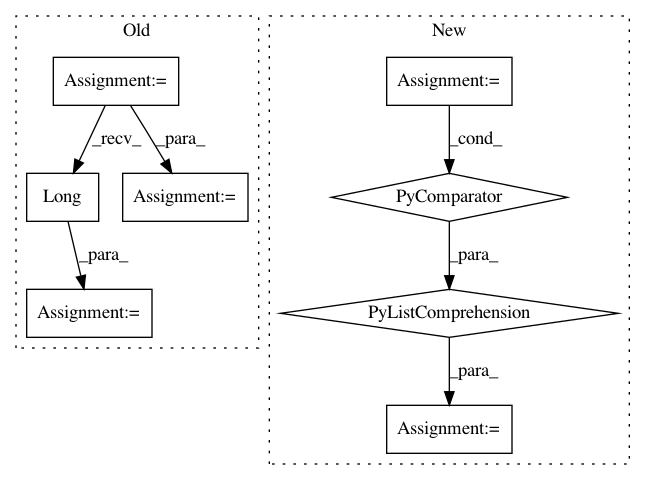

9107c93764e8af783f08b4c8cb2252cd48dc8f32,onmt/IO.py,ONMTDataset,__init__,#ONMTDataset#Any#Any#Any#Any#Any#,97
Before Change
src_vocab = torchtext.vocab.Vocab(Counter(src))
self.src_vocabs.append(src_vocab)
// mapping source tokens to indices in the dynamic dict
src_map = torch.zeros(len(src)).long()
for j, w in enumerate(src):
src_map[j] = src_vocab.stoi[w]
self.src_vocabs.append(src_vocab)
example["src_map"] = src_map
if "tgt" in example:
tgt = example["tgt"]
mask = torch.zeros(len(tgt) + 2).long()
for j, word in enumerate(tgt, 1):
mask[j] = src_vocab.stoi[word]
example["alignment"] = mask
keys = examples[0].keys()
fields = [(k, fields[k]) for k in keys]
After Change
src_vocab = torchtext.vocab.Vocab(Counter(src))
self.src_vocabs.append(src_vocab)
// mapping source tokens to indices in the dynamic dict
src_map = torch.LongTensor([src_vocab.stoi[w] for w in src])
self.src_vocabs.append(src_vocab)
example["src_map"] = src_map
if "tgt" in example:
tgt = example["tgt"]
mask = torch.LongTensor(
[0] + [src_vocab.stoi[w] for w in tgt] + [0])
example["alignment"] = mask
keys = examples[0].keys()
fields = [(k, fields[k]) for k in keys]
In pattern: SUPERPATTERN
Frequency: 3
Non-data size: 8
Instances
Project Name: OpenNMT/OpenNMT-py
Commit Name: 9107c93764e8af783f08b4c8cb2252cd48dc8f32
Time: 2017-09-02
Author: bpeters@coli.uni-saarland.de
File Name: onmt/IO.py
Class Name: ONMTDataset
Method Name: __init__
Project Name: dnouri/skorch
Commit Name: a7cd7a15a9baf741f2b4fcd32f3d8055827889b5
Time: 2017-08-08
Author: marian.tietz@ottogroup.com
File Name: examples/word_language_model/predict.py
Class Name:
Method Name:
Project Name: allenai/allennlp
Commit Name: 5d3828219d1afc9c6018a9f3779a7a7768ed7e15
Time: 2018-06-26
Author: markn@allenai.org
File Name: allennlp/models/semantic_role_labeler.py
Class Name: SemanticRoleLabeler
Method Name: forward